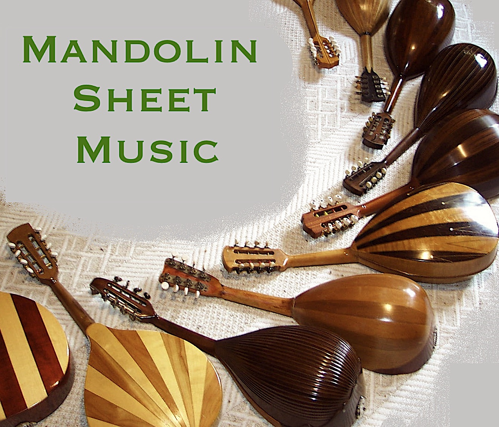

There is a great store for printed sheet music for plucked string
orchestras in Germany: Trekel Verlag. But
many mandolin compositions from the beginning of the 20th century
are not for sale anymore anywhere. (There are some exceptions, for example,
the
Otto Wrede Regina-Verlag appears to still sell music from about 100 years ago!)
On this site, I am collecting links
to sheet music for plucked string orchestras that is in the public domain
and available on-line.
Mandolin sheet music
Here is mandolin
sheet music written by myself or copyright free sheet music from the
archive of the Braunschweig Mandolin Orchestra.
|
|

|
Links to websites with mandolin sheet music
Classical Mandolin:
- Michael Reichenbach's
site with
links to music by Cristofaro, Munier, Schick, Kollmaneck,
Wohlfahrt and others. Solo mandolin and plucked string orchestra.
His Musicaneo
website.
-
VP Music Media: website with 100s of PDFs of (mostly) Italian guitar and
mandolin music. Solo, duo and orchestral arrangements.
-
Compositions for mandolin/guitar/lute by Calace. (Maybe all of them?)
- IMSLP categories:
mandolin,
guitar,
lute. (100s for mandolin and 1000s for guitar and lute.)
- John Goodin's site with
links to his own work and works in the public domain including early 20th century
North American music.
- Some
early 20th century mandolin tunes from USA.
-
Mutopia music for ensembles (Barbella, Gervasio and others)
- The journal
Il Plettro from 1906 to 1943 and the journal
Vita Mandolinistica from 1901 to 1910.
- The Classical Guitar Library
has a few pages with sheet music for mandolin and guitar or mandolin quartett.
(Mostly Italian pieces from the early 20th century.)
- The University of Rochester Library has some sheet music. For example,
searching for "mandolin" retrieves copies of the Crescendo Journal.
- Not mandolin, but
zither music from Germany that was played in USA in the early 20th century.
- Japanese
site with lists of mandolin composers and compositions. No sheet music,
but a very comprehensive site.
Folk and Bluegrass:
- TEF files
for Bluegrass music. Solo mandolin with guitar chords. A free TEF-file viewer
is available.
- Jan Wolters' arrangements
for mandolin and other instruments (folk songs, children's songs).
- Brian Oberlin's site
(Bluegrass and Fiddle tunes, Christmas songs, chords etc)
|